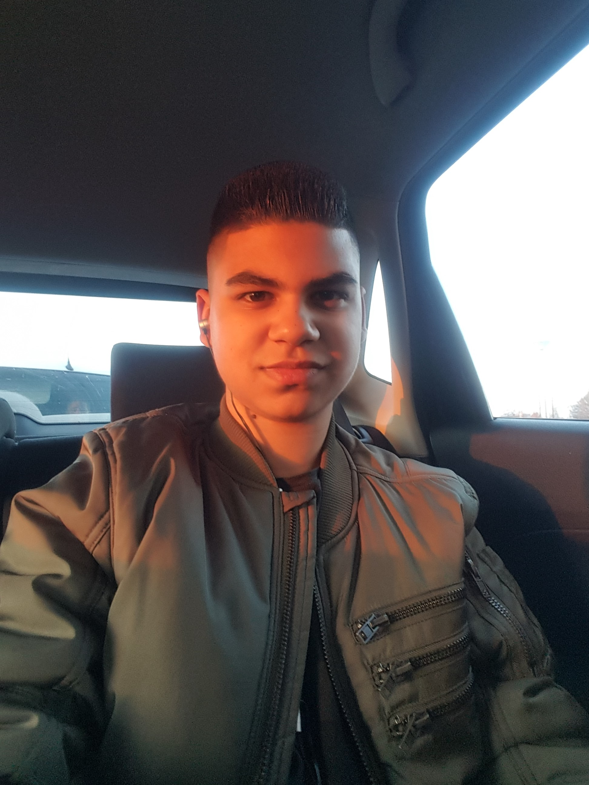

Ik ben Fayaaz Hoesseinbaks, ik ben 16 jaar en Ik woon in Halsteren met mijn zus en moeder.
Ik ben geboren in Nederland en ben van afkomst Surinaams. Mijn vader was Surinaams en mijn moeder is Nederlands.
Ik zie mezelf als een persoon met doorzetttingsvermogen en ik ben duidelijk gericht op mijn doelen.
Als iets mij niet lukt dan geef ik niet op en ga ik juist door in plaats van op te geven.
Mijn doel is om voldoende kennis op te doen om een goede applicatieontwikkelaar te worden.
Ik weet al sinds mijn 12e dat ik een applicatieontwikkelaar wil worden en ben er altijd geïntereseerd in geweest.
Ik ben al wel bekend met computers en ben er al sinds jongs af aan mee bezig.
Ik heb op mijn stage een harddisk uit elkaar gehaald en weer in elkaar gezet en heb zelf met mijn neef een laptop uit elkaar gehaald en weer gemaakt.
Ik heb veel interesse in deze opleiding, want ik zag het altijd bij mijn neef wat hij deed en dat vond ik ook interessant.
Voordat ik naar deze opleiding kwam zat ik op RSG 't Rijks in Bergen op Zoom en deed mavo.
Ik heb nog nooit gewerkt, maar ik heb wel stage gelopen voor school bij een ICT bedrijf in roosendaal genaamd Ability ICT en ik mocht ze als referentie gebruiken. Ik heb daar een computer uitelkaar gehaald en ook de harddisk.
klik hier om naar de opdracht te gaan 